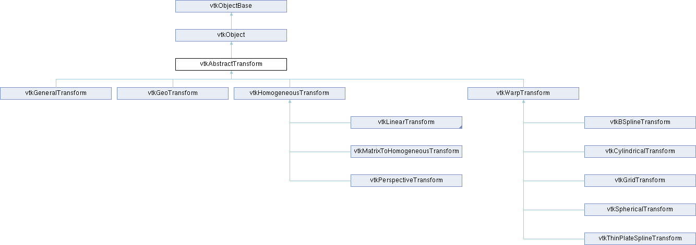

|
Etrek
|
|
Etrek
|
superclass for all geometric transformations More...
#include <vtkAbstractTransform.h>

Public Member Functions | |
| vtkTypeMacro (vtkAbstractTransform, vtkObject) | |
| void | PrintSelf (ostream &os, vtkIndent indent) override |
| void | TransformPoint (const float in[3], float out[3]) |
| void | TransformPoint (const double in[3], double out[3]) |
| double * | TransformPoint (double x, double y, double z) VTK_SIZEHINT(3) |
| double * | TransformPoint (const double point[3]) VTK_SIZEHINT(3) |
| double * | TransformNormalAtPoint (const double point[3], const double normal[3]) VTK_SIZEHINT(3) |
| double * | TransformVectorAtPoint (const double point[3], const double vector[3]) VTK_SIZEHINT(3) |
| virtual void | TransformPoints (vtkPoints *inPts, vtkPoints *outPts) |
| virtual void | TransformPointsNormalsVectors (vtkPoints *inPts, vtkPoints *outPts, vtkDataArray *inNms, vtkDataArray *outNms, vtkDataArray *inVrs, vtkDataArray *outVrs, int nOptionalVectors=0, vtkDataArray **inVrsArr=nullptr, vtkDataArray **outVrsArr=nullptr) |
| vtkAbstractTransform * | GetInverse () |
| void | SetInverse (vtkAbstractTransform *transform) |
| virtual void | Inverse ()=0 |
| void | DeepCopy (vtkAbstractTransform *) |
| void | Update () |
| virtual VTK_NEWINSTANCE vtkAbstractTransform * | MakeTransform ()=0 |
| virtual int | CircuitCheck (vtkAbstractTransform *transform) |
| vtkMTimeType | GetMTime () override |
| void | Modified () override |
| void | UnRegister (vtkObjectBase *O) override |
| float * | TransformFloatPoint (float x, float y, float z) VTK_SIZEHINT(3) |
| float * | TransformFloatPoint (const float point[3]) VTK_SIZEHINT(3) |
| double * | TransformDoublePoint (double x, double y, double z) VTK_SIZEHINT(3) |
| double * | TransformDoublePoint (const double point[3]) VTK_SIZEHINT(3) |
| void | TransformNormalAtPoint (const float point[3], const float in[3], float out[3]) |
| void | TransformNormalAtPoint (const double point[3], const double in[3], double out[3]) |
| double * | TransformDoubleNormalAtPoint (const double point[3], const double normal[3]) VTK_SIZEHINT(3) |
| float * | TransformFloatNormalAtPoint (const float point[3], const float normal[3]) VTK_SIZEHINT(3) |
| void | TransformVectorAtPoint (const float point[3], const float in[3], float out[3]) |
| void | TransformVectorAtPoint (const double point[3], const double in[3], double out[3]) |
| double * | TransformDoubleVectorAtPoint (const double point[3], const double vector[3]) VTK_SIZEHINT(3) |
| float * | TransformFloatVectorAtPoint (const float point[3], const float vector[3]) VTK_SIZEHINT(3) |
| virtual void | InternalTransformPoint (const float in[3], float out[3])=0 |
| virtual void | InternalTransformPoint (const double in[3], double out[3])=0 |
| virtual void | InternalTransformDerivative (const float in[3], float out[3], float derivative[3][3])=0 |
| virtual void | InternalTransformDerivative (const double in[3], double out[3], double derivative[3][3])=0 |
| Public Member Functions inherited from vtkObject | |
| vtkBaseTypeMacro (vtkObject, vtkObjectBase) | |
| virtual void | DebugOn () |
| virtual void | DebugOff () |
| bool | GetDebug () |
| void | SetDebug (bool debugFlag) |
| void | PrintSelf (ostream &os, vtkIndent indent) override |
| void | RemoveObserver (unsigned long tag) |
| void | RemoveObservers (unsigned long event) |
| void | RemoveObservers (const char *event) |
| void | RemoveAllObservers () |
| vtkTypeBool | HasObserver (unsigned long event) |
| vtkTypeBool | HasObserver (const char *event) |
| vtkTypeBool | InvokeEvent (unsigned long event) |
| vtkTypeBool | InvokeEvent (const char *event) |
| std::string | GetObjectDescription () const override |
| unsigned long | AddObserver (unsigned long event, vtkCommand *, float priority=0.0f) |
| unsigned long | AddObserver (const char *event, vtkCommand *, float priority=0.0f) |
| vtkCommand * | GetCommand (unsigned long tag) |
| void | RemoveObserver (vtkCommand *) |
| void | RemoveObservers (unsigned long event, vtkCommand *) |
| void | RemoveObservers (const char *event, vtkCommand *) |
| vtkTypeBool | HasObserver (unsigned long event, vtkCommand *) |
| vtkTypeBool | HasObserver (const char *event, vtkCommand *) |
| template<class U, class T> | |
| unsigned long | AddObserver (unsigned long event, U observer, void(T::*callback)(), float priority=0.0f) |
| template<class U, class T> | |
| unsigned long | AddObserver (unsigned long event, U observer, void(T::*callback)(vtkObject *, unsigned long, void *), float priority=0.0f) |
| template<class U, class T> | |
| unsigned long | AddObserver (unsigned long event, U observer, bool(T::*callback)(vtkObject *, unsigned long, void *), float priority=0.0f) |
| vtkTypeBool | InvokeEvent (unsigned long event, void *callData) |
| vtkTypeBool | InvokeEvent (const char *event, void *callData) |
| virtual void | SetObjectName (const std::string &objectName) |
| virtual std::string | GetObjectName () const |
| Public Member Functions inherited from vtkObjectBase | |
| const char * | GetClassName () const |
| virtual vtkTypeBool | IsA (const char *name) |
| virtual vtkIdType | GetNumberOfGenerationsFromBase (const char *name) |
| virtual void | Delete () |
| virtual void | FastDelete () |
| void | InitializeObjectBase () |
| void | Print (ostream &os) |
| void | Register (vtkObjectBase *o) |
| int | GetReferenceCount () |
| void | SetReferenceCount (int) |
| bool | GetIsInMemkind () const |
| virtual void | PrintHeader (ostream &os, vtkIndent indent) |
| virtual void | PrintTrailer (ostream &os, vtkIndent indent) |
| virtual bool | UsesGarbageCollector () const |
Protected Member Functions | |
| virtual void | InternalUpdate () |
| virtual void | InternalDeepCopy (vtkAbstractTransform *) |
| Protected Member Functions inherited from vtkObject | |
| void | RegisterInternal (vtkObjectBase *, vtkTypeBool check) override |
| void | UnRegisterInternal (vtkObjectBase *, vtkTypeBool check) override |
| void | InternalGrabFocus (vtkCommand *mouseEvents, vtkCommand *keypressEvents=nullptr) |
| void | InternalReleaseFocus () |
| Protected Member Functions inherited from vtkObjectBase | |
| virtual void | ReportReferences (vtkGarbageCollector *) |
| vtkObjectBase (const vtkObjectBase &) | |
| void | operator= (const vtkObjectBase &) |
Protected Attributes | |
| float | InternalFloatPoint [3] |
| double | InternalDoublePoint [3] |
| Protected Attributes inherited from vtkObject | |
| bool | Debug |
| vtkTimeStamp | MTime |
| vtkSubjectHelper * | SubjectHelper |
| std::string | ObjectName |
| Protected Attributes inherited from vtkObjectBase | |
| std::atomic< int32_t > | ReferenceCount |
| vtkWeakPointerBase ** | WeakPointers |
Additional Inherited Members | |
| Static Public Member Functions inherited from vtkObject | |
| static vtkObject * | New () |
| static void | BreakOnError () |
| static void | SetGlobalWarningDisplay (vtkTypeBool val) |
| static void | GlobalWarningDisplayOn () |
| static void | GlobalWarningDisplayOff () |
| static vtkTypeBool | GetGlobalWarningDisplay () |
| Static Public Member Functions inherited from vtkObjectBase | |
| static vtkTypeBool | IsTypeOf (const char *name) |
| static vtkIdType | GetNumberOfGenerationsFromBaseType (const char *name) |
| static vtkObjectBase * | New () |
| static void | SetMemkindDirectory (const char *directoryname) |
| static bool | GetUsingMemkind () |
| Static Protected Member Functions inherited from vtkObjectBase | |
| static vtkMallocingFunction | GetCurrentMallocFunction () |
| static vtkReallocingFunction | GetCurrentReallocFunction () |
| static vtkFreeingFunction | GetCurrentFreeFunction () |
| static vtkFreeingFunction | GetAlternateFreeFunction () |
superclass for all geometric transformations
vtkAbstractTransform is the superclass for all VTK geometric transformations. The VTK transform hierarchy is split into two major branches: warp transformations and homogeneous (including linear) transformations. The latter can be represented in terms of a 4x4 transformation matrix, the former cannot.
Transformations can be pipelined through two mechanisms:
1) GetInverse() returns the pipelined inverse of a transformation i.e. if you modify the original transform, any transform previously returned by the GetInverse() method will automatically update itself according to the change.
2) You can do pipelined concatenation of transformations through the vtkGeneralTransform class, the vtkPerspectiveTransform class, or the vtkTransform class.
|
virtual |
Check for self-reference. Will return true if concatenating with the specified transform, setting it to be our inverse, or setting it to be our input will create a circular reference. CircuitCheck is automatically called by SetInput(), SetInverse(), and Concatenate(vtkXTransform *). Avoid using this function, it is experimental.
Reimplemented in vtkGeneralTransform, vtkPerspectiveTransform, and vtkTransform.
| void vtkAbstractTransform::DeepCopy | ( | vtkAbstractTransform * | ) |
Copy this transform from another of the same type.
| vtkAbstractTransform * vtkAbstractTransform::GetInverse | ( | ) |
Get the inverse of this transform. If you modify this transform, the returned inverse transform will automatically update. If you want the inverse of a vtkTransform, you might want to use GetLinearInverse() instead which will type cast the result from vtkAbstractTransform to vtkLinearTransform.
|
overridevirtual |
Override GetMTime necessary because of inverse transforms.
Reimplemented from vtkObject.
Reimplemented in vtkBSplineTransform, vtkGeneralTransform, vtkGridTransform, vtkIterativeClosestPointTransform, vtkLandmarkTransform, vtkMatrixToHomogeneousTransform, vtkMatrixToLinearTransform, vtkPerspectiveTransform, vtkThinPlateSplineTransform, and vtkTransform.
|
inlineprotectedvirtual |
Perform any subclass-specific DeepCopy.
Reimplemented in vtkBSplineTransform, vtkCylindricalTransform, vtkGeneralTransform, vtkGeoTransform, vtkGridTransform, vtkHomogeneousTransform, vtkIdentityTransform, vtkIterativeClosestPointTransform, vtkLandmarkTransform, vtkMatrixToHomogeneousTransform, vtkMatrixToLinearTransform, vtkPerspectiveTransform, vtkSphericalTransform, vtkThinPlateSplineTransform, and vtkTransform.
|
pure virtual |
This will transform a point and, at the same time, calculate a 3x3 Jacobian matrix that provides the partial derivatives of the transformation at that point. This method does not call Update. Meant for use only within other VTK classes.
Implemented in vtkGeneralTransform, vtkGeoTransform, vtkHomogeneousTransform, vtkIdentityTransform, vtkLinearTransform, and vtkWarpTransform.
|
pure virtual |
This will calculate the transformation without calling Update. Meant for use only within other VTK classes.
Implemented in vtkGeneralTransform, vtkGeoTransform, vtkHomogeneousTransform, vtkIdentityTransform, vtkLinearTransform, and vtkWarpTransform.
|
inlineprotectedvirtual |
Perform any subclass-specific Update.
Reimplemented in vtkBSplineTransform, vtkGeneralTransform, vtkGridTransform, vtkIterativeClosestPointTransform, vtkLandmarkTransform, vtkMatrixToHomogeneousTransform, vtkMatrixToLinearTransform, vtkPerspectiveTransform, vtkThinPlateSplineTransform, and vtkTransform.
|
pure virtual |
Invert the transformation.
Implemented in vtkGeneralTransform, vtkGeoTransform, vtkIdentityTransform, vtkIterativeClosestPointTransform, vtkLandmarkTransform, vtkMatrixToHomogeneousTransform, vtkMatrixToLinearTransform, vtkPerspectiveTransform, vtkTransform, and vtkWarpTransform.
|
pure virtual |
Make another transform of the same type.
Implemented in vtkBSplineTransform, vtkCylindricalTransform, vtkGeneralTransform, vtkGeoTransform, vtkGridTransform, vtkIdentityTransform, vtkIterativeClosestPointTransform, vtkLandmarkTransform, vtkMatrixToHomogeneousTransform, vtkMatrixToLinearTransform, vtkPerspectiveTransform, vtkSphericalTransform, vtkThinPlateSplineTransform, and vtkTransform.
|
overridevirtual |
Override Modified to avoid ModifiedEvent during update.
Reimplemented from vtkObject.
|
overridevirtual |
Methods invoked by print to print information about the object including superclasses. Typically not called by the user (use Print() instead) but used in the hierarchical print process to combine the output of several classes.
Reimplemented from vtkObjectBase.
Reimplemented in vtkBSplineTransform, vtkCylindricalTransform, vtkGeneralTransform, vtkGeoTransform, vtkGridTransform, vtkHomogeneousTransform, vtkIdentityTransform, vtkIterativeClosestPointTransform, vtkLandmarkTransform, vtkLinearTransform, vtkMatrixToHomogeneousTransform, vtkMatrixToLinearTransform, vtkPerspectiveTransform, vtkSphericalTransform, vtkThinPlateSplineTransform, vtkTransform, and vtkWarpTransform.
| void vtkAbstractTransform::SetInverse | ( | vtkAbstractTransform * | transform | ) |
Set a transformation that this transform will be the inverse of. This transform will automatically update to agree with the inverse transform that you set.
|
inline |
Apply the transformation to a double-precision normal at the specified vertex. If the transformation is a vtkLinearTransform, you can use TransformDoubleNormal() instead.
|
inline |
Apply the transformation to a double-precision (x,y,z) coordinate. Use this if you are programming in Python or Java.
|
inline |
Apply the transformation to a double-precision vector at the specified vertex. If the transformation is a vtkLinearTransform, you can use TransformDoubleVector() instead.
|
inline |
Apply the transformation to a single-precision normal at the specified vertex. If the transformation is a vtkLinearTransform, you can use TransformFloatNormal() instead.
|
inline |
Apply the transformation to an (x,y,z) coordinate. Use this if you are programming in Python or Java.
|
inline |
Apply the transformation to a single-precision vector at the specified vertex. If the transformation is a vtkLinearTransform, you can use TransformFloatVector() instead.
| void vtkAbstractTransform::TransformNormalAtPoint | ( | const float | point[3], |
| const float | in[3], | ||
| float | out[3] ) |
Apply the transformation to a normal at the specified vertex. If the transformation is a vtkLinearTransform, you can use TransformNormal() instead.
|
inline |
Apply the transformation to a double-precision coordinate. You can use the same array to store both the input and output point.
|
inline |
Apply the transformation to a coordinate. You can use the same array to store both the input and output point.
|
inline |
Apply the transformation to a double-precision coordinate. Use this if you are programming in Python or Java.
|
virtual |
Apply the transformation to a series of points, and append the results to outPts.
Reimplemented in vtkGeoTransform, vtkHomogeneousTransform, vtkIdentityTransform, and vtkLinearTransform.
|
virtual |
Apply the transformation to a combination of points, normals and vectors.
Reimplemented in vtkGeoTransform, vtkHomogeneousTransform, vtkIdentityTransform, and vtkLinearTransform.
| void vtkAbstractTransform::TransformVectorAtPoint | ( | const float | point[3], |
| const float | in[3], | ||
| float | out[3] ) |
Apply the transformation to a vector at the specified vertex. If the transformation is a vtkLinearTransform, you can use TransformVector() instead.
|
overridevirtual |
Needs a special UnRegister() implementation to avoid circular references.
Reimplemented from vtkObjectBase.
| void vtkAbstractTransform::Update | ( | ) |
Update the transform to account for any changes which have been made. You do not have to call this method yourself, it is called automatically whenever the transform needs an update.